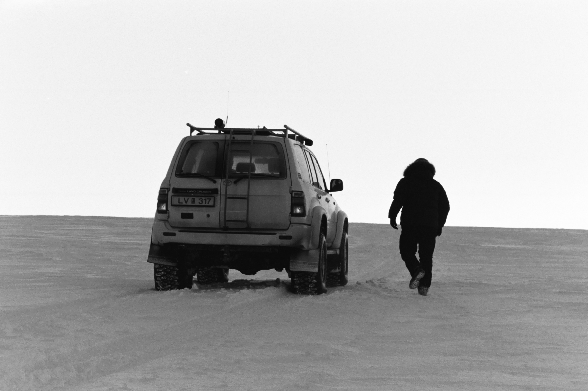

Ferilskrá
Menntun
B.Sc. í vélaverkfræði, Háskóli Íslands
2018 - 2021 Þriðja árs nemi í vélaverkfræði við Háskóla Íslands.
Skiptinám, Danmarks Tekniske Universitet
Haustönn 2020 Stundaði skiptinám við DTU í eina önn.
Stúdentspróf, Menntaskólinn í Reykjavík
2014 - 2018 Útskrifaðist úr eðlisfræðideild II.
Starfsreynsla
Drónarannsóknir, Nýsköpunarsjóður námsmanna
Sumar 2020 Vann við hönnun og smíði sjálfstýrðs dróna til veðurmælinga. Verkefni sem er í stöðugri þróun og unnið í samstarfi við Belging ehf. Freistað verður þess að framkvæma mælingar sem ekki hefur verið hægt að gera áður, nema með gríðarlegum tilkostnaði.
Göngustígagerð, Orkuveita Reykjavíkur
Sumur 2019 og 2020 Gerð og viðhald göngustíga á Hengilsvæðinu í samráði við landslagsarkitekt. Vönduð vinnubrögð nauðsynleg til að lágmarka röskun á umhverfi.
Þjónusturáðgjafi, Toyota Kauptúni
Sumar og haust 2018 Ráðgjöf og sala varahluta í allar gerðit Toyota-bifreiða. Krafðist góðra mannlegra samskipta og raskra vinnubragða. Lærði á samsetningu bíla og lagerforrit.
Landvörður, Þjóðgarðurinn á Þingvöllum
Sumar 2017 Viðhald þjóðgarðsins og fræðsla ferðamanna. Mikil mannleg samskipti og sjálfstæð vinnubrögð.
Vegmerking, GSG ehf.
Sumur 2015 og 2016 Merking vega og bílastæða víðsvegar um landið. Kynnti nýjar mælingaraðferðir sem enn eru notaðar í dag og endurbætti skýrslutöku fyrirtækisins.
Önnur reynsla
Team SPARK - Formula Student, Háskóli Íslands
2018 - 2019 Hannaði nýjan keðjustrekkjara fyrir Formula Student bíl Háskóla Íslands. Tók þátt í framleiðslu hluta úr koltrefjum í aðstöðu Össurar.
Þrívíddarprentun í bílaiðnaði, Iðan fræðslusetur
Mars 2019 Námskeið í þrívíddarprentun plasttegunda og þætti sem snerta hönnun og framleiðslu.
Grunnnámskeið í suðu, Iðan fræðslusetur
Janúar 2019 Fékk kennslu í pinna-, MIG-/MAG-, og TIG-suðu—bæði bókleg og verkleg kennsla.
Kunnátta
Tungumál
Íslenska (móðurmál), enska (móðurmál), danska (spjallhæfur), spænska (þokkalegur).
Tölvuþekking
Inventor/SolidWorks, AutoCAD, MATLAB, Java, Excel, LaTeX, XAL, Arduino, R, EES.